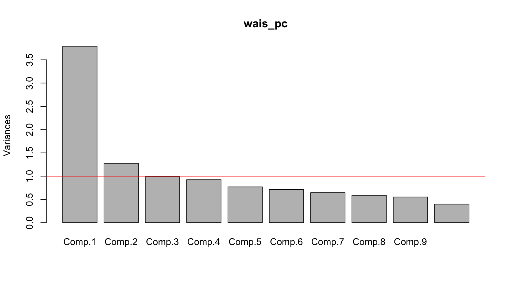

We see from Table 2 that some of the variables have missing data, specifically, the literacym and the literacyf variables have complete rate of 78%. Also, the standard deviation from each variable is in a different scale, ranging from 0.62 units in gdp to 38.08 units in babymort. This makes sense because some variables are in a log-scale.
Note
Given this scenario of differences between scales and variability, we would prefer to perform the principal component analysis with the correlation matrix instead of the covariance matrix.
a)
We perform two principal component analysis using: a) the covariance matrix and b) the correlation matrix.
Code
# get complete casesworld_complete = world |>drop_na()# for the covariance matrixpca_cov = world_complete |>select(-c(1,2)) |>prcomp()# for the correlation matrixpca_cor = world_complete |>select(-c(1,2)) |>prcomp(scale =TRUE)
We plot the differences for the two analysis using each method. The plots will contain the first two principal components.
Figure 1: Plot of principal component loadings for the first two pcs using the covariance matrix (left) and the correlation matrix (right)
Based on the results presented on Figure 1 we can conclude that the loadings across the two solutions differ (although the plot only presented the first two components for each solution, the same behavior, or a lesser extent of it, is observed on the remainder of the components). The right plot shows that the variables related to literacy have larger values on the first and second principal component than the other variables (except for babymort in the second component). This behavior matches the difference in standard deviation we see in Table 2. On the other hand, the left plot shows a more distributed pattern of the loadings, where no variable stands out from the rest. The difference between the loadings across the two solutions can be explain by the scale-dependency of the technique. Given this difference, I think it is more appropriate to analyze this dataset with the correlation matrix.
b)
To investigate the number of necessary principal components to adequately describe the variability among the variables, several approaches will be taken.
Figure 2: Scree plot and Kaiser rule (dotted red line)
The scree plot suggests that we need to extract two principal components, because at pca number 3 we notice the “elbow” in the amount of variance explained. After the second component, the remainder principal components account for a negligible amount of variance. Plus, the Kaiser rule also suggest that we need to extract two principal components because only the first two have an eigenvalue greater than one.
Proportion of variance explained (raw and cummulative) for each
principal component (PC)
PC
Percentage
Cummulative
1
64.76
64.76
2
18.00
82.75
3
7.30
90.05
4
4.31
94.36
5
2.55
96.92
6
0.99
97.91
7
0.64
98.55
8
0.43
98.98
9
0.40
99.37
10
0.29
99.66
11
0.15
99.81
12
0.13
99.94
13
0.06
100.00
Based on Table 3, the analysis indicates that two principal components explain over a 80% of the variance. Even thought is subjective, I believe that this percentage is good enough for this context. Also, two components explaining over a 80% in this analysis with 13 variables is acceptable/awesome 😁.
Note
The three methods (scree-plot, Kaiser rule and proportion of variance explained) suggest that 2 principal components appear to be necessary to describe adequately the variability in these variables. The rest of the analysis will be done using two principal components.
c)
In order to make interpretations of the two principal components, we will take a look at the loadings:
Based on Table 4 and its graphical representation in Figure 1 (right plot) we can interpret each principal component as follows:
Principal Component 1: This component seems to be associated with general or overall development indicators. High positive scores on PC1 correlate with high GDP, high literacy rates (for both males and females), and higher life expectancy for both males and females. This suggests that countries with higher scores on PC1 are likely to be more developed, with stronger economies and better health and education systems. On the other hand, countries with low scores on PC1 exhibit higher rates of infant mortality (babymort), higher AIDS rates (aidsr), and higher birth rates (birthr). These are typical of less developed countries where healthcare and education systems are weaker and economic activity is lower.
Principal Component 2: This component captures more demographic variables and aspects of population dynamics. Notably, countries with high scores on PC2 have higher death rates (deathr) and possibly lower population increases (popincr), indicating countries that may be experiencing either low birth rates, high mortality rates, or a combination of both. On the other end, countries with low scores on PC2 have higher fertility, birth rates (birthr), and a higher birth to death ratio (bdratio), suggesting these are countries with younger populations and potentially higher population growth due to these factors.
Based on Figure 3, there does appear to be an association between the component scores and the region a country belongs to. For instance:
OECD and East Europe countries are generally clustered towards higher values on PC1. This suggests that these countries, which are typically more economically developed, have higher GDP, literacy rates, and life expectancy, characteristics that are positively correlated with PC1.
African countries are spread across both PC1 and PC2, but they are generally clustered towards lower PC1 values, indicating lower GDP, literacy rates, and life expectancy. The spread across PC2 might indicate variability in demographic patterns within the region, such as differences in birth and death rates.
Latin American, Middle Eastern, and Pacific/Asian countries appear to be intermediate on PC1, which would suggest these regions have varying levels of development. They’re not as high as OECD or East Europe countries but not as low as many African countries.
Latin American countries show a slight trend towards lower values on PC2, which could imply higher birth rates and fertility rates in these countries.
Middle Eastern and Pacific/Asian countries are scattered across both components, indicating a wide variety of economic, health, and demographic profiles within these regions.
e)
To show that the weight vectors for the first two components are orthogonal, we first need to extract the weight vectors or loadings for the perform analysis:
loadings = pca_cov$rotation
Then we check the dot product for the first two loadings vectors
round(sum(loadings[, 1] * loadings[, 2]), 3)
[1] 0
As expected, this value is \(0\), showing that the weight or loadings for the first two components are orthogonal.
We perform a pca with the correlation matrix and evaluate and identify an appropriate number of principal components with the scree-plot, the Kaiser rule and the proportion of variance explained.
Code
wais_pc =princomp(covmat = wais)screeplot(wais_pc); abline(h =1, col ="red")

Figure 4: Scree plot
The scree-plot and the Kaiser rule suggests that 2 principal components would be appropriate to describe the variance among the variables. Now we compute the proportion of variance explained by each component.
Code
lambda = wais_pc$sdev^2v =NULLfor (i in1:11) v[i] = lambda[i]/11tibble(PC =c(1:11),per =round(v*100, 2),cum =round(cumsum(lambda)/11*100, 2) ) |>gt() |>cols_width( per ~px(120), cum ~px(120) ) |>cols_label(per ="Percentage",cum ="Cummulative" ) |>cols_align(columns =-1,align ="center" )
Table 5:
Proportion of variance explained (raw and cummulative) for each
principal component (PC)
PC
Percentage
Cummulative
1
34.46
34.46
2
11.61
46.07
3
8.99
55.06
4
8.40
63.46
5
7.00
70.46
6
6.49
76.96
7
5.86
82.82
8
5.36
88.18
9
5.01
93.19
10
3.63
96.82
11
3.18
100.00
Based on Table 5, we see that the first component explained around 34% of the variance, the second and the third component around 11% and 9%, respectively. This information doesn’t provide much evidence toward the number of principal components to extract. Hence, we rely on the scree-plot and the Kaiser rule. Therefore, 2 principal components would be appropriate to describe the variance among the variables. And together, this two components explained about 46% of the variance.
Note
The rest of the analysis will be done using two principal components.
Based on Table 6 we can interpret each principal component as follows:
Principal Component 1: seems to capture general intelligence (or as our friend Spearman would called it the “g” factor) since all the subtests have positive loadings and most of them are strong. This suggests that PC1 might be measuring a general cognitive ability that affects performance across all the subtests.
Principal Component 2: this component distinguishes between subtests that involve verbal comprehension and those that require other skills such as processing speed, nonverbal reasoning, or spatial processing. Subtests like “Information”, “Comprehension”, and “Vocabulary” have positive loadings, which may represent a ‘verbal’ dimension. In contrast, tests such as “Block Design”, “Picture Completion”, and “Object Assembly” have negative loadings, possibly indicating a ‘performance’ dimension or nonverbal skills.
1-factor model: This model does not appear to fit the data well. The P-value is very low, it could imply that the model significantly differs from the observed data. This is supported by a TLI that is below the acceptable threshold of 0.90 and an RMSEA that is considered high, indicating a poor fit.
2-factor model: This model shows significant improvement over the 1-factor model. The P-value is higher, although it’s still below 0.05. The TLI is much improved and is above the threshold of 0.90, indicating a good fit. The RMSEA is within the range of what is considered a reasonable error of approximation, suggesting this model fits the data well.
3-factor model: This model continues the trend of improved fit. The P-value is well above 0.05, suggesting that the model fits the data closely enough that any differences from the observed data are not statistically significant. The TLI is very close to 1, and the RMSEA is well below 0.05, which indicates a close fit.
4-factor model: This model has the best fit according to the indices presented. The P-value is high, which could suggest the model fits the data so well that there’s no difference between the model and the observed data, although it could also indicate overfitting. The TLI is perfect, and the RMSEA is 0, which might actually raise suspicions as it suggests a perfect model fit, which is very rare in practice.
Using a parsimonious approach, we can use the 2-factor model because it provides a balance between complexity and goodness of fit.
Factor 1 seems to represent a broad cognitive ability that might be related to general intelligence, given that it is positively associated with a wide range of subtests, particularly those requiring verbal comprehension, problem-solving, and perceptual organization. This is consistent with the general intelligence (“g”) factor framework (once again, our friend Spearman).
Factor 2 appears to distinguish between subtests that require visual-spatial processing and manipulation (e.g., Block Design, Object Assembly) which have positive loadings, and subtests that are more verbally oriented (e.g., Vocabulary, Information) which have negative loadings. This suggests that Factor 2 could be capturing a contrast between visual-spatial abilities and verbal abilities.
The PCA results showed that all subtests had positive loadings on PC1, suggesting a single underlying dimension. On PC2, there was a clear distinction between subtests, with those requiring verbal comprehension (e.g., Information, Comprehension, Vocabulary) having positive loadings, and those requiring processing speed or non-verbal reasoning (e.g., Digit Symbol, Picture Completion, Block Design) having negative loadings.
In the factor analysis results:
Factor 1 seems to align with the PC1 from the PCA, where it represents a general intelligence factor given its positive association with a range of subtests.Factor 2 appears to align somewhat with PC2 from the PCA in terms of distinguishing between verbal and non-verbal abilities but with a different pattern of loadings. In the PCA, verbal abilities were positively loaded on PC2, whereas in the factor analysis, some verbal abilities have negative loadings on ML2.
Overall, both PCA and factor analysis results suggest the presence of a general cognitive factor. However, the second component (PC2) and factor highlight different aspects of the underlying structure in the data. PCA provides a purely statistical representation of variance without assuming an underlying model, while factor analysis attempts to uncover latent variables that might explain the observed correlations among the subtests.
Also, it is worth mentioning that the results of the factor analysis (in terms of how many factors are needed to explain the intercorrelations) match the conclusion in the PCA analysis. As shown by Figure 4
d)
These are the communalities for the Information and Vocabulary subtests given by the model
round(fa_02$communality[c(1,6)], 4)
Information Vocabulary
0.5261 0.6113
We can get the same result using the factor loading as follows:
Based on the two factor model I computed, the Information and Comprehension subtests (let’s rename them \(X_1\) and \(X_2\), respectively) can be express as follows:
\[
\begin{align}
X_1 &= \lambda_{11}f_1+ \lambda_{12}f_2+e_1\\
X_2 &= \lambda_{21}f_1+ \lambda_{22}f_2+e_2\\
\end{align}
\] Then, the correlation of this two variables can be compute as:
Using the assumptions of the two-factor model, we can reduce the latter expression into:
\[
\begin{align}
Cov(X_1, X_2) &= Cov(\lambda_{11}f_1,\lambda_{21}f_1)+Cov(\lambda_{12}f_2,\lambda_{22}f_2)\\
&= \lambda_{11}\lambda_{21}Var(f_1) + \lambda_{12}\lambda_{22}Var(f_2)\\
&= \lambda_{11}\lambda_{21} + \lambda_{12}\lambda_{22}
\end{align}
\] The estimations of these quantities can be found in the factor loadings:
fa_02$loadings[c(1,2),c(1,2)]
ML1 ML2
Information 0.6376020 -0.3457973
Comprehension 0.5450952 -0.1819704
Hence, the fitted covariance (well, actually correlation) will be:
\[
\begin{align}
cov(X_1,X_2) &= \hat{\lambda}_{11}\hat{\lambda}_{21} + \hat{\lambda}_{12}\hat{\lambda}_{22}\\
&= (0.6376020*0.5450952) + (-0.3457973*-0.1819704)\\
&\approx 0.4104
\end{align}
\] The observed covariance (correlation) between \(X_1\) and \(X_2\) is \(0.37\). This means that the residual for this correlation approx. will be:
\[
residual_{X1,X2} \approx 0.3700 - 0.4104 \approx -0.0404
\] Which can be obtain with the residual matrix:
fa_02$residual[1,2]
[1] -0.04047867
This means that the model overestimated the correlation between the Information and Comprehension subtests (it was off by 0.04 units). However, the estimation yielded a plausible result.
Question 3
a)
In the one-factor model with three observed variables, the (symmetric) covariance matrix is the following:
\[
\begin{align}
\Sigma_{xx} & = \begin{bmatrix}
\sigma^2_1 & & \\
\sigma_1\sigma_2 & \sigma^2_2 & \\
\sigma_1\sigma_3 & \sigma_2\sigma_3 & \sigma^2_3\\
\end{bmatrix} = \begin{bmatrix}
\lambda^2_1 + \psi_1 & & \\
\lambda_1\lambda_2 & \lambda^2_2 + \psi_2 & \\
\lambda_1\lambda_3 & \lambda_2\lambda_3 & \lambda^2_3 + \psi_3\\
\end{bmatrix}
\end{align}
\] Which means that we can get estimates for the parameters of the model by solving the following system of equations:
The problem we would encounter is the overparameterization of the model. Since we have 3 observed variables (\(p=3\)), the unique pieces of information (or degrees of freedom) available for the estimation of the model parameters is \(\frac{p(p+1)}{2} = \frac{3(3+1)}{2} = 6\). However, a two-factor model requires at least \(9\) degrees of freedom. This means that the two-factor model cannot be uniquely fitted to the covariance matrix because it does not have enough data points to estimate all the required parameters, aka the model is not identifiable.